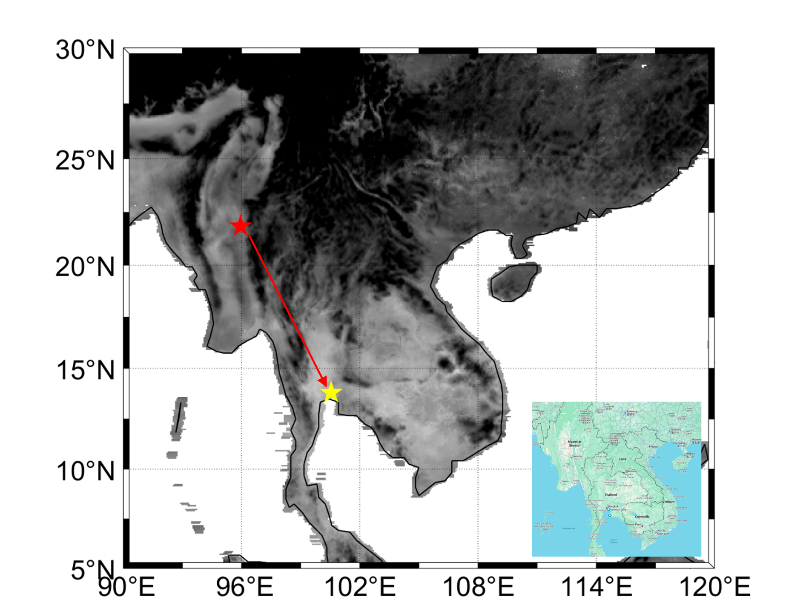
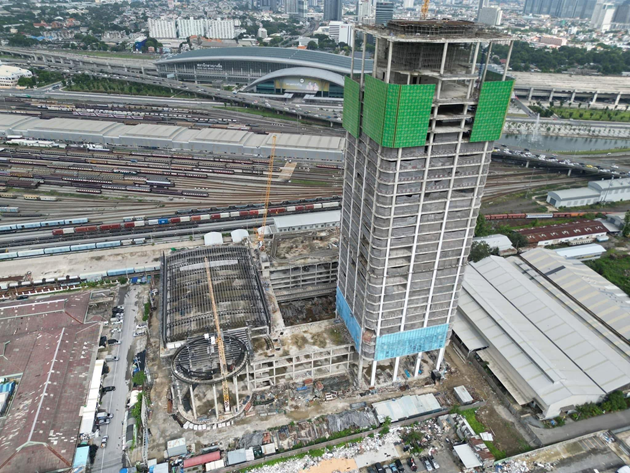
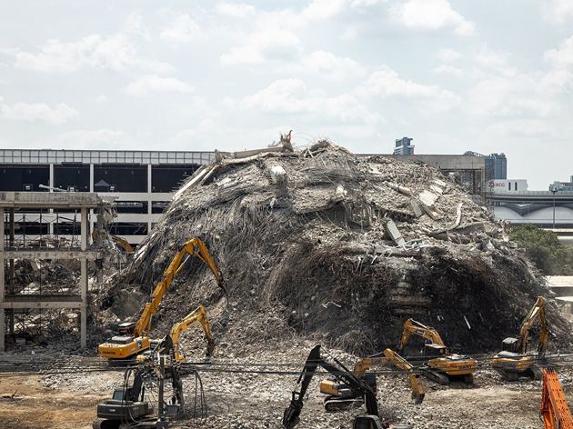
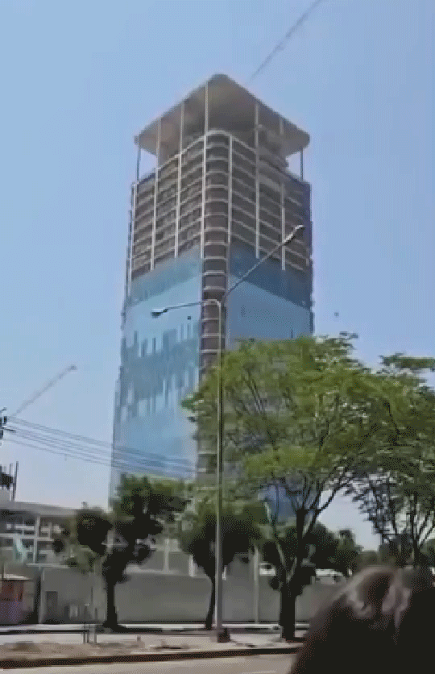
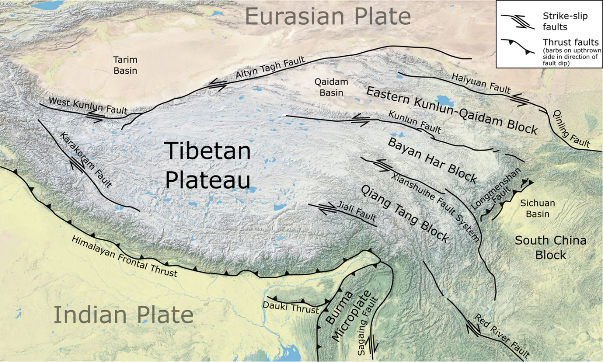
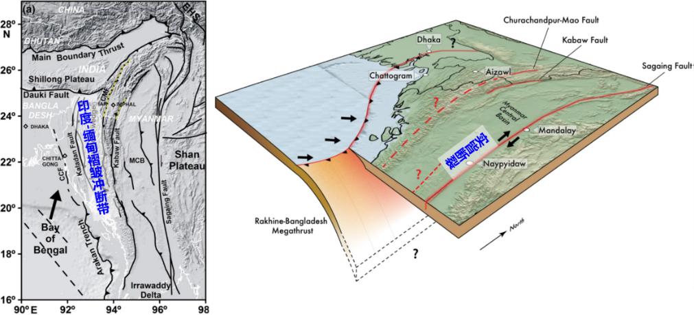
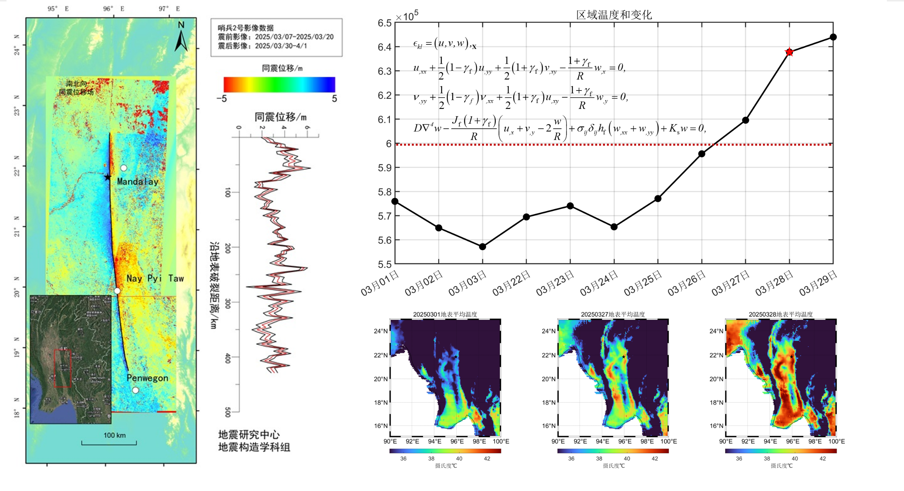
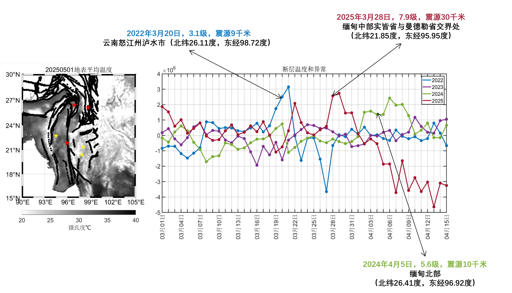
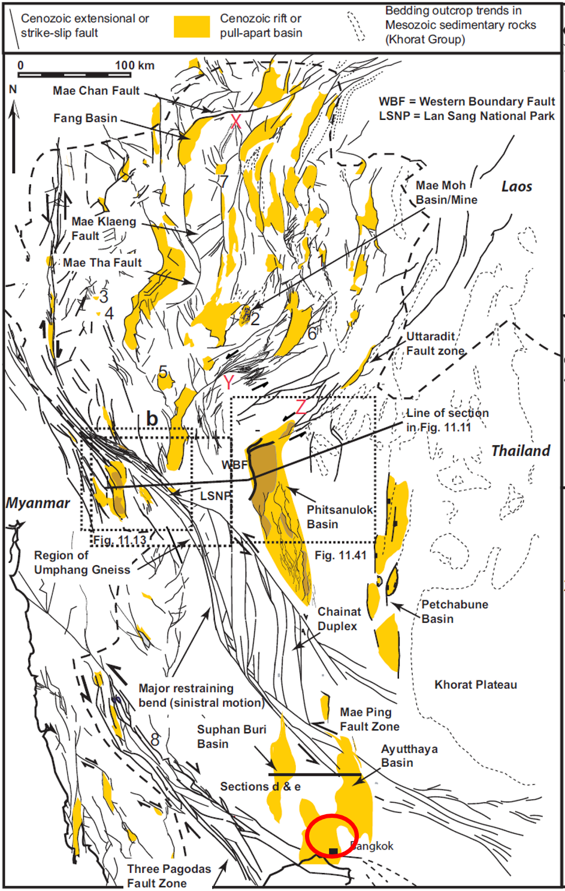

2025年3月28日缅甸强震及思考
地震概述
2025年3月28日14时20分（东八区时间），缅甸实皆市附近（北纬21.85度，东经95.95度）发生里氏7.9级地震，震源深度30公里。震中距离中国边境线最近处约294公里。
一、地震本质与预警难点
地震的本质是岩层断裂，这一过程的精确建模极具挑战性。难点在于断裂发生瞬间，地质介质从连续状态转变为非连续状态，同时应力分布、地质结构形态以及机械能与热能等多种能量形式相互作用、高度耦合。利用地震波中P波和S波的初至时间差进行预警，能在地震破坏性的S波和面波到达前数秒至数十秒发出警报，为人员疏散和关键操作争取宝贵时间。然而，实现更长期的地震预测预报（延长预警时间）以及对震后损失的快速准确评估，仍是全球地震科学家面临的核心难题。
二、预测预报：聚焦应力与孕震过程
预测局部地区的强震活动性，关键在于理解其驱动断层的应力状态变化。这需要持续关注断层的初始应力状态、在长期平静期内的应力积累趋势、震前中期的应力扰动迹象，以及同震时的应力突变。这些变化深受构造驱动力、断层几何形态以及地质介质非均匀性等因素影响。因此，揭示地震孕育、发生全过程（即全周期）中应力场的分布与演化规律，明晰复杂因素影响下的强震孕震机理，是进行地震危险性分析的根本基础和核心任务。
三、震后损失评估：走向精准与系统化
震后损失评估是一个融合科学模型、技术应用与制度设计的系统工程：
- 理念上：追求形成"精准刻画灾情-科学支撑重建决策"的闭环。
- 方法上：从宏观粗估向单栋建筑精细模拟转变，并探索量化间接损失。
- 实施上：依托全国自然灾害风险普查数据库和分级报灾体系，结合卫星遥感和人工智能技术，大幅提升评估效率。
未来仍需攻克的关键问题包括间接经济损失的动态监测，以及非经济价值（如文化遗产、生态损失）的量化，推动评估重心从单纯的"物理重建"向全面的"经济社会系统恢复"延伸。
级联灾害：泰国审计署大楼倒塌
此次缅甸地震引发了一个令人深思的远场级联灾害事件：地震发生时，位于千里之外泰国曼谷甘烹碧路（邻近洽图洽周末市集）的33层审计署大楼瞬间倒塌。截至2025年5月1日，该事故已造成83人死亡、33人受伤，另有11人失踪。




地质背景分析

印度板块大约从55个百万年前开始碰撞欧亚大陆，造成了喜马拉雅山脉的持续隆升。

在东侧形成印度-缅甸褶皱冲断带，该地区斜向挤压的变形分别通过逆冲和走滑的方式予以分解，此次缅甸地震就发生在以右旋走滑为主的实皆断裂上。
热力-位移场耦合分析
应力累积到什么情况下，就会发生地震？这一点是需要回答的。可惜受限于观测时间尺度（年计）和应力累积时间尺度（万年计），初始应力是不清楚的。天基观测（比如红外观测热场、SAR观测位移）是持续的，用状态（热场-位移场）的差异调整模型的初始应力场，这是一个典型的强非线性反问题。而物理过程（应力累积）的精细刻画是反演的基本保障，反演理论奠基人之一Albert Tarantola在其著作中指出："反演问题的解必须满足观测数据与理论预测之间的一致性"。因此，需要更多的观测信息辅助更新应力-应变场。
对于3·28缅甸地震，我们分析其地表热场和位移场，沿断裂带解耦出应力累积所造成的热场变换，如下图所示。


级联灾害传播分析
审计署大楼位于泰国中部平原，属于Chao Phraya盆地的沉积中心，该盆地是一个典型的后裂谷热沉降盆地，形成于晚中新世至早上新世。其基底由古近纪裂谷盆地（如Suphan Buri、Ayutthaya盆地）和前新生代岩石组成，上覆平坦的年轻沉积层。
根据泰国中、西部地磁图，可以看出曼谷存在东西走向的异常带，结合亚欧板块-印度板块挤压所形成的褶皱、地震反射成像结果，推断东西走向断裂。


图9右：东南亚大陆北部的现代应力状态图（Morley C K, 2011）
上图展示了根据主要断层位移推断出的 Shmax 方向与基于上地壳地震震源机制的现代应力状态的匹配情况。其中，地震数据（1975 年至今）来自哈佛数据库；Tingay等（2009 年）的钻孔破裂数据；三塔山断层区域的地震数据来自Bott等（1997 年），并认为这些地震是由与新大坝相关的水库蓄水引起的水加载所触发的。
选取四个位置对比分析地震频次（0-18）与震级（5.1-6和6.1-7），区域（a）：24-28°N，97-101°E；区域（b）：20-24°N，97-101°E；区域（c）16-20°N，97-101°E；区域（d）12-16°N，97-101°E，展示了在研究区域内向南移动的地震的震级和发生频率的逐渐降低情况。
Simon等（2007 年）的关于中国相对于苏门答腊岛的GPS测量速度图表示，萨甘断层以西的速度箭头是从更靠西的实际站点延伸过来的，以说明萨甘断层沿线的现代大规模位移情况。
结合以上分析，可以认为：实皆断裂带的活动通过走滑网络（Mae Ping、Three Pagodas断裂）向东传递，最终传递到审计署大楼位置。但能量已经较弱，建筑设计、材料品质、施工与管理等问题是倒塌的主要因素。